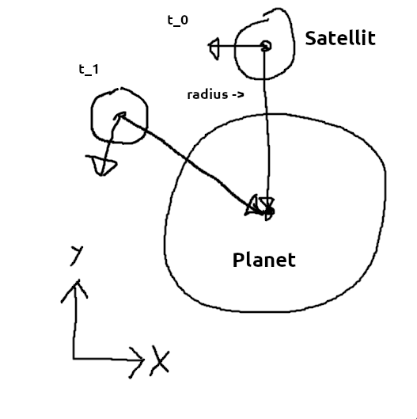

Theis' simulation har nogle upræcisheder. Dette skyldes, at
implementationen, ikke følger en kurve, men i stedet skubber satelliten
imod dets relative "højre" normalvektor retning hver iteration, ganget
med tiden mellem tidligere og nuværende iteration. Det vil sige at jo
mindre iterationer den har, jo mindre præcis bliver den, da dens
definition af højre kun er opdateret efter en iteration er færdiggjort.
Det betyder at selv med mange iterationer per sekund, vil den eventuelt
drifte væk.

Simons implementering
$$ \text{Satellitens position} = \vec{p} [m] $$
$$ \text{Satellitens hastighed} = \vec{v} [\frac{m}{s}] $$
$$ \text{Satellitens masse} = m [kg] $$
$$ \text{Planetens position} = \vec{P} [m] $$
$$ \text{Planetens masse} = M [kg] $$
$$ \vec{r} = \vec{p_p} - \vec{p_s} $$
$$ F_g = \frac{GMm}{\lvert \vec{r} \rvert ^2} $$
$$ \vec{F_g} = \hat{r} * F_g $$
$$ \vec{a} = \frac{\vec{F_g}}{m} * \Delta t $$
$$ \vec{v_1} = \vec{v_0} + \vec{a} $$
$$ \vec{p_1} = \vec{p_0} + \vec{vel_1} $$
Hvor kommer enhederne fra?
$$ F_g = \frac{G [m^3 * kg^-1 * s^-2] * M [kg] * m [kg]}{\lvert \vec{r} \rvert^2 [m^2]} $$
$$ F_g = \frac{G * M * m [m^3 * s^-2 * kg] }{\lvert \vec{r} \rvert^2 [m^2]} $$
$$ F_g [N = m * kg * s^-2] = \frac{G * M * m }{\lvert \vec{r} \rvert^2} [m * kg * s^-2] $$
$$ \vec{a} = \frac{\vec{F_g} [N]}{m [kg]} * \Delta t [s] $$
$$ \vec{a} = \frac{\vec{F_g}}{m} * \Delta t [m * kg * s^-2 * kg^-1 * s] $$
$$ \vec{a} [m * s^-1] = \frac{\vec{F_g}}{m} * \Delta t [m * s^-1] $$
